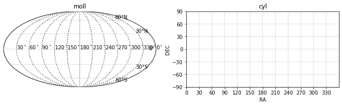

angular selection function (asfunc)
This is a manuscript of documentation. Since the basemap is deprecated, this code is being updated using cartopy.
Any problem or suggestion is welcome! (e-mail: guyizhou@sjtu.edu.cn)
module for weight maps
main_block.assign2pix
main_block.assign2wht
module for visualization (old version based on Basemap)
发展一个高自由度的画图模块，与python的matplotlib绘图包的使用方式一致。
Requirements: Basemap
In current stage, this module has cylinder projection and mollweide projection.
import matplotlib.pyplot as plt
import asfunc
fig, axs = plt.subplots(1,2,figsize = (12,4))
m0 = asfunc.plot_block(ax = axs[0]).moll()
m1 = asfunc.plot_block(ax = axs[1]).cyl()

The following is the demostration.
from csstmock import asfunc_old as asfunc
import numpy as np
import matplotlib.pyplot as plt
import healpy as hp
fig, axs = plt.subplots(1, 2, figsize = (12, 4))
fig.subplots_adjust(top = 0.95, bottom = 0.05, left = 0.02, right = 0.98, hspace = 0.1)
m = asfunc.plot_block(ax = axs[0]).moll(lon_0 = 120)
m.set_parallels()
m.set_meridians()
m.set_galactic(b0 = 0, color = 'k', lw = 2, ls = 'dashed')
m.set_gc()
axs[0].set_title('moll')
ra = np.array([240, 250, 250, 240])
dec = np.array([ 40, 40, 50, 50])
r = np.array([ 4, 4, 5, 5])
m.draw_circle(ra, dec, r, color = 'b')
m.draw_poly(ra, dec, edgecolor = 'k', facecolor = 'w', lw = 2)
m.draw_poly(ra + 20, dec, edgecolor = 'r', facecolor = 'r', lw = 2)
m.draw_poly([270, 330, 330, 270], [0, 0, 60, 60], edgecolor = 'b', facecolor = 'b', lw = 2, alpha = 0.5)
m.draw_path( [210, 360], [30, 60], color = 'g')
m.draw_path( [0, 0], [30, 60], color = 'g')
nside = 1
# the following code is how to color-coding the pixels of healpy by whts at a given colormap
boundary_healpy, centercoord = asfunc.get_boundary( nside , ipixs = [9, 10, 11], npt = 30, filename = 'test1_healpy.graph', overwrite = True)
m.fill_boundary(boundary_healpy, wht = [9, 2, 3] , vmin = 0, vmax = 4, cmap=plt.get_cmap('plasma') )
for ipix in [9, 10, 11]:
alpha, delta = hp.pix2ang(nside , ipix, nest = True, lonlat = True )
m.text( alpha, delta, 'ipix = %s'%ipix, color = 'k' )
m.text(0.3, 0.8, 'this is (0,0) in projected axes', color = 'r')
axs[0].text(0.3, 0.8, 'this is (0,0) in figure axes', color = 'r', transform = axs[0].transAxes )
m.scatter(0.3,0.8, color= 'r')
axs[0].scatter(0.3, 0.8, color = 'r', transform = axs[0].transAxes )
m = asfunc.plot_block(ax = axs[1] ).cyl(axis = [210, 300, 30, 60] )
m.draw_circle(ra, dec, r, color='b', lw = 1)
m.draw_poly(ra, dec, edgecolor = 'k', facecolor = 'w', lw = 2)
m.draw_poly([270, 330, 330, 270], [0, 0, 60, 60], edgecolor = 'b', facecolor = 'b', lw = 2, alpha = 0.5)
m.draw_path([210, 360], [30, 60], color = 'g')
m.draw_path( [0, 0], [30, 60], color = 'g')
m.draw_poly(ra + 20, dec, edgecolor = 'r', facecolor = 'r', lw = 2, label = 'colored ploygon')
axs[1].set_title('cyl')
plt.show()